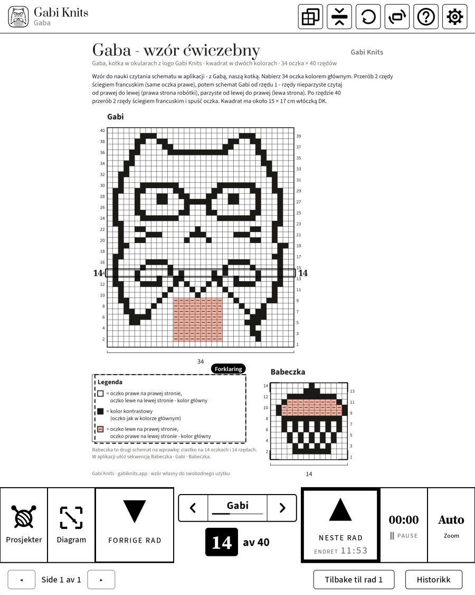
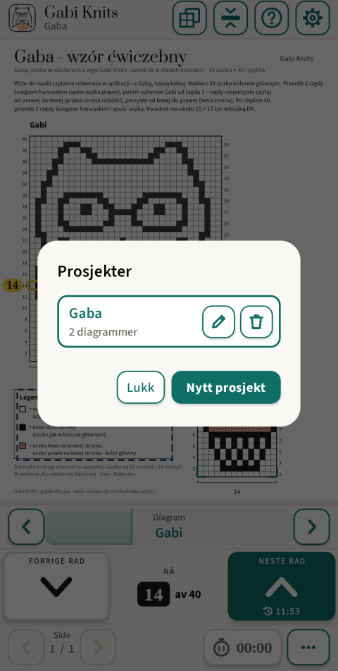
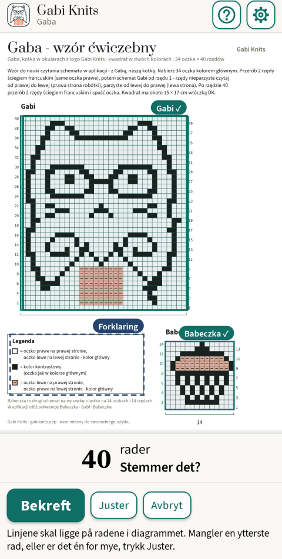
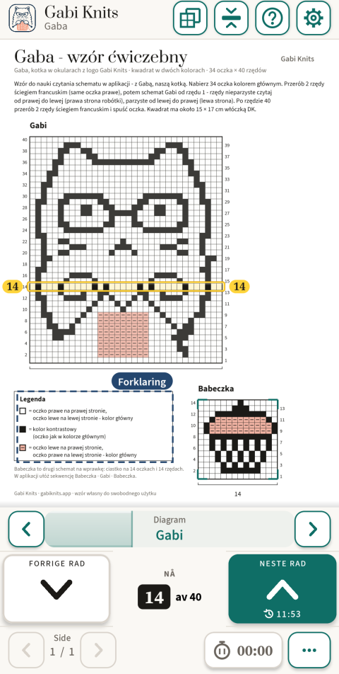
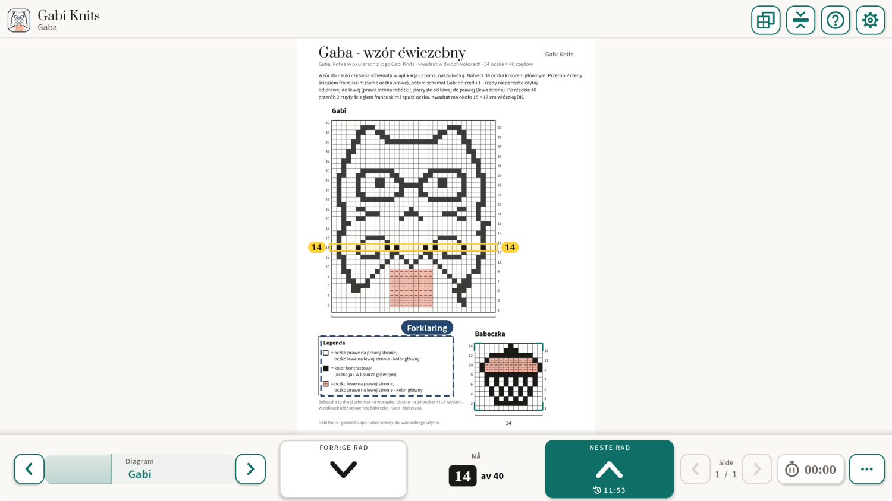

Diagramleser for strikking
Du vet alltid hvilken rad du er på.
Åpne en PDF-oppskrift og trykk på diagrammet – Gabi Knits finner radene selv og markerer tydelig den du strikker nå. Én stor knapp tar deg til neste rad, og fremdriften lagres av seg selv.
- Ingen konto
- Ingen reklame
- Virker uten internett

Finner diagrammet selv
Trykk på diagrammet på siden, så finner appen rammen og radene selv. Du sjekker bare og bekrefter.
Raden alltid i syne
Gjeldende rad er tydelig markert, med nummeret på begge sider. Én stor «Neste rad»-knapp, lett å trykke på med én hånd.
Laget for e-ink
Svart på hvitt, ingen animasjoner, store knapper og radnumre – utformet for BOOX-nettbrett fra første versjon.
For BOOX e-ink-nettbrett
Utformet for e-ink fra starten
Gabi Knits ble til på en BOOX Note Air, og der blir hver versjon testet. På e-ink er skjermen rolig: svart på hvitt, ingenting som beveger seg og ingenting som avhenger av farger. På telefoner og vanlige nettbrett bruker den samme appen farger og jevn bevegelse.
Tykk ramme i stedet for farge
Gjeldende rad får en kraftig svart ramme – tydelig på en svart-hvitt-skjerm.
Ingen animasjoner
Sider og rader skifter i ett steg. Ingenting glir eller toner ut på e-ink-skjermen.
Store knapper og tall
Store radknapper og radnumre du kan lese over strikketøyet.
Testet på BOOX Note Air
Virker på BOOX-nettbrett med Google Play, både stående og liggende.
Slik virker det
Tre trinn fra PDF til pinnene.

Åpne PDF-oppskriften
Trykk på «Prosjekter», så «Nytt prosjekt», og velg filen. Prosjektet får sitt eget navn og husker hvor du er.

Trykk på diagrammet
Gabi Knits finner rammen og radene i diagrammet og ber deg sjekke dem. Kantene kan du justere for hånd.

Strikk rad for rad
Gjeldende rad er tydelig markert, og telleren viser «Rad 14 av 40». «Neste rad» går videre, «Forrige rad» går tilbake.
Hva appen kan
Bare det som hjelper deg gjennom raden – ingenting som er i veien.
Sekvens
Bestem rekkefølgen du strikker diagrammene i, for eksempel Muffins · Gabi · Muffins. På siste rad går «Neste rad» selv videre til neste diagram og siden det står på.
Tegnforklaringen for hånden
Merk tegnforklaringen i oppskriften én gang. Den åpnes med ett trykk over siden, og raden din blir der den er.
Flere diagrammer i én oppskrift
Hvert diagram husker sin rad. Du bytter med pilene ‹ › på stripen ved radtelleren – ett trykk, og siden er fri – eller med den flytende widgeten.
Raden midt på skjermen
Diagrammet flytter seg under en fast stripe, så raden du strikker, blir værende midt på skjermen.
Strikketid
Se hvor lang tid et prosjekt tok. Klokken går bare når du slår den på – også i prosjekter uten diagram.
Første prosjekt med veiledning
Ved første oppstart leder en kort veiledning deg steg for steg gjennom øvingsoppskriften «Gaba» – katten Gabi med briller og en muffins.
Fremdriften lagres av seg selv
Hvert prosjekt husker side, diagrammer, rader og strikketid. Radhistorikken viser de siste flyttene, og «Tilbake til rad 1» starter et diagram på nytt.
Seks språk
Norsk, engelsk, polsk, tysk, dansk og svensk.
På e-ink, telefon og nettbrett
Én app med eget oppsett for hver skjerm. Stående eller liggende, zoom fra 100 til 500 % eller Auto, og siden kan roteres når et diagram ligger på tvers.

Oppskriftene dine blir hos deg
PDF-oppskriftene, prosjektene og radnumrene dine blir på enheten din. Appen bruker internett bare til å gjennomføre et kjøp og sjekke at du har tilgang – uten tilkobling strikker du bare videre.
Les personvernerklæringen- Ingen konto
- Ingen reklame
- Ingen sporing eller analyse
- Virker uten internett
Spørsmål
Trenger jeg en konto?
Nei. Ingen registrering og ingen innlogging. Kjøp går gjennom Google Play-kontoen din.
Virker appen uten internett?
Ja. Å lese oppskrifter og strikke krever aldri internett. Du trenger tilkobling bare for å kjøpe og av og til for å bekrefte abonnementet.
Hvilke enheter virker den på?
Android 8.1 eller nyere: telefoner, nettbrett og BOOX e-ink-nettbrett med Google Play.
Hvilke oppskrifter passer?
PDF-oppskrifter med diagram på rutenett. Testet på dusinvis av DROPS-diagrammer; appen finner rutenettet og radene selv, og kantene kan du rette for hånd.
Hva kan jeg gjøre uten å kjøpe?
Legge til prosjekter, åpne oppskrifter, bla i sidene og merke diagrammer. Å strikke rad for rad med markert rad krever gratis prøveperiode eller kjøp.
Jeg har ny telefon. Betaler jeg igjen?
Nei. Installer Gabi Knits med samme Google-konto og trykk på «Gjenopprett kjøp».
Hvordan sier jeg opp abonnementet?
I Google Play: Betalinger og abonnementer → Abonnementer. Prosjektene dine blir der de er.
Finnes det en versjon for iPhone eller iPad?
Ikke ennå – Android kommer først.
Spørsmål eller ideer?
Skriv til oss – om en oppskrift som ikke virker, en idé til appen eller et spørsmål før lanseringen. Vi leser hver melding.
contact@gabiknits.app